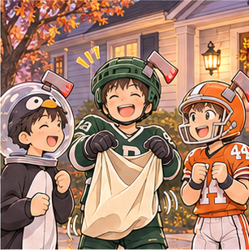
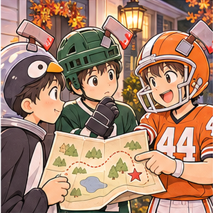
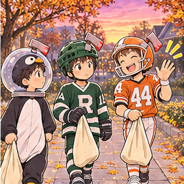
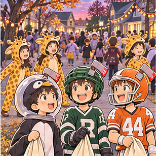

Chapter 6. Giant Bananas and Two-headed Astronauts - Part 1 of 3
After school, me and Ryan went home and put on our . Then we went over to Michael's house. His mom gave us each a to hold our candy.
"Let's get going!" Ryan yelled, his . "If we don't get out there right away, all the good candy will be taken and we'll be apples and .""Yeah!" I agreed.

"If I don't get a Twizzler in about five minutes, I'm gonna die.""Not so fast," Michael said, opening up a big map he had drawn. "I worked it all out so we'll have the candy ."

Wow! Big words. Michael should be in the program.

Me and Ryan looked at Michael's map. Michael doesn't like to just walk up and down the street collecting candy like a normal kid. He always plans a so he can go to all the houses that have good candy and not waste any time at the houses where people turn off their lights and they're not home.

Michael is weird. "We'll save Mrs. Patty's house for last," Michael said. "She says she has more candy than anybody in town.

Let's go!"I was thinking about what Mrs. Patty said earlier at school."Do you think there really *is* a Halloween Monster?" I asked the guys as we headed up the street.

"Of course not," Michael said. "Mrs. Patty was just .""We'd better be just in case," Ryan said.

We set off on our candy . There were lots of kids in weird walking up and down the street. !

Darth Vaders! ! Princesses!

Cowboys! Ghosts! Four kids dressed up as a bunch of giant bananas!

What a !We saw dressed up like bums. always dress up like bums on Halloween.

That must be an easy costume to make, because dress like bums even when it *isn't* Halloween."!" we shouted when we got to the first house on Michael's map. A lady opened the door.

"Ooh, you boys are !" she said, even though she totally didn't look scared at all. "What are you supposed to be?""We're a zombie football player, a zombie hockey player, and a killer zombie penguin," Michael said.